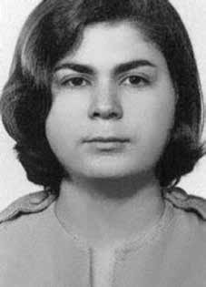

Gastone
Lúcia
de Carvalho
Beltrão
CIRCUNSTÂNCIAS DA MORTE
Gastone Lúcia Carvalho Beltrão foi executada em 22 de janeiro de 1972. Segundo a versão registrada na requisição de exame necroscópico, teria ocorrido um tiroteio na esquina das ruas Heitor Peixoto e Inglês de Souza, no bairro do Cambuci, em São Paulo (SP).
De acordo com essa versão oficial, Gastone teria falecido no local. Depois de dois meses, a família foi informada por uma freira que algo havia acontecido a Gastone. Sua mãe, Zoraide, dirigiu-se ao Departamento de Ordem Política e Social de São Paulo (DOPS-SP) e, após muito insistir, conseguiu falar com o delegado Sérgio Fernando Paranhos Fleury, comandante da ação que culminou na morte de sua filha. Após negar a execução, Fleury declarou que a filha de Zoraide era uma moça muito corajosa e forte, e que resistira até o último momento.
A ficha de Gastone produzida pelo DOPS-SP afirmava que a morte teria ocorrido em tiroteio travado com agentes dessa instituição. Entretanto, foram produzidos documentos acerca de sua morte com horários e versões contraditórios que permitiram desconstruir a versão oficial da morte em decorrência do tiroteio. De acordo com a requisição de necropsia feita pelo DOPS, a morte teria ocorrido às 15h30. O laudo necroscópico atesta o horário do óbito às 11h.
Há inconsistências também em relação à identificação do corpo. O laudo de perícia técnica emitido naquele dia afirma ter recebido às 17h pedido de solicitação de exame pericial em um cadáver “até então desconhecido”. No entanto, na requisição de necropsia há todos os dados de identificação do corpo como sendo de Gastone e, segundo o documento, a entrada teria sido às 15h30, ou seja, menos de uma hora entre a morte, a identificação e o seu encaminhamento ao IML. O laudo de necropsia, assinado pelos legistas Isaac Abramovitc e Walter Sayeg, atesta a presença de “sinais particulares” no corpo da vítima, como inúmeras cicatrizes e fraturas, além de treze ferimentos circulares, característicos daqueles produzidos pela entrada de projétil de arma de fogo. Apesar da quantidade de informações constantes do laudo, todas foram arroladas de forma bastante superficial.
A Comissão Especial sobre Mortos e Desaparecidos Políticos (CEMDP) analisou e verificou a inconsistência da documentação. A fratura no braço (cúbito e rádio) e pulso esquerdo identificada no laudo indica que Gastone pode ter sido imobilizada e sofrido torção do membro até sua fratura. Há também, nas fotos anexadas aos documentos, sinais visíveis de equimoses e escoriações no corpo da vítima, indicando que as lesões poderiam ter ocorrido ainda com Gastone viva. Foi possível verificar também evidências de disparos efetuados de cima para baixo, ou seja, em situações em que a vítima encontrava-se caída no chão, portanto já rendida e em situação de rendição ou de completa vulnerabilidade.
Apesar de não conseguir dados totalmente conclusivos acerca das reais circunstâncias de morte, a análise produzida a partir do processo na CEMDP refuta categoricamente a versão oficial, alegando que a quantidade de lesões, fraturas e ferimentos encontrados em seu corpo não foram ocasionadas em decorrência de tiroteio. De acordo com o diagnóstico da perícia, fica evidente a montagem de um “teatro” pelos agentes de repressão. Isto reforça os indícios de que a vítima teria sido ferida no local, mas conduzida e executada em outro local.
Pode-se inferir, portanto, a possibilidade de que Gastone tenha sido detida e torturada até a morte por agentes de segurança do Estado. Gastone foi enterrada como indigente no Cemitério Dom Bosco, de Perus, na cidade de São Paulo. Apenas em 1975 foi permitido à família o acesso aos seus restos mortais, transladados para o jazigo da família Beltrão no Cemitério Nossa Senhora da Piedade, em Maceió (AL).
Gastone Lúcia Carvalho Beltrão was executed on January 22, 1972. According to the version recorded in the necroscopic examination request, a shooting had occurred on the corner of Heitor Peixoto and Inglés de Souza streets, in the Cambuci neighborhood, in São Paulo (SP).
According to this official version, Gastone died at the scene. After two months, the family was informed by a nun that something had happened to Gastone. Her mother, Zoraide, went to the São Paulo Department of Political and Social Order (DOPS-SP) and, after much insistence, managed to speak to delegate Sérgio Fernando Paranhos Fleury, commander of the action that culminated in her daughter's death. After denying the execution, Fleury declared that Zoraide's daughter was a very courageous and strong girl, and that she had resisted until the last moment.
Gastone's record produced by the DOPS-SP stated that the death had occurred in a shootout with agents from that institution. However, documents were produced about his death with contradictory times and versions that allowed the official version of his death as a result of the shooting to be deconstructed. According to the autopsy request made by the DOPS, the death would have occurred at 3:30 pm. The autopsy report certifies the time of death at 11 am.
There are also inconsistencies regarding the identification of the body. The technical expert report issued that day states that a request was received at 5pm for a forensic examination of a “previously unknown” corpse. However, the autopsy request contains all the data identifying the body as that of Gastone and, according to the document, entry would have been at 3:30 pm, that is, less than an hour between death, identification and forwarding to the IML. The autopsy report, signed by coroners Isaac Abramovitc and Walter Sayeg, attests to the presence of “particular signs” on the victim’s body, such as numerous scars and fractures, in addition to thirteen circular wounds, characteristic of those produced by the entry of a firearm projectile. Despite the amount of information contained in the report, it was all listed in a very superficial manner.
The Special Commission on Political Deaths and Disappearances (CEMDP) analyzed and verified the inconsistency of the documentation. The fracture in the arm (ulna and radius) and left wrist identified in the report indicates that Gastone may have been immobilized and suffered twisting of the limb until it fractured. There are also, in the photos attached to the documents, visible signs of bruises and abrasions on the victim's body, indicating that the injuries could have occurred while Gastone was still alive. It was also possible to verify evidence of shots fired from above, that is, in situations where the victim was lying on the ground, therefore already surrendered and in a situation of surrender or complete vulnerability.
Despite not being able to obtain completely conclusive data about the real circumstances of death, the analysis produced from the CEMDP process categorically refutes the official version, claiming that the number of injuries, fractures and wounds found on his body were not caused by a shooting. According to the expert's diagnosis, it is clear that the repression agents were putting on a “theatre”. This reinforces the evidence that the victim was injured at the scene, but taken and executed elsewhere.
It can therefore be inferred that Gastone was detained and tortured to death by state security agents. Gastone was buried as a pauper in the Dom Bosco Cemetery, in Perus, in the city of São Paulo. Only in 1975 was the family allowed access to his remains, which were transferred to the Beltrão family tomb in the Nossa Senhora da Piedade Cemetery, in Maceió (AL).
Gastone Lúcia Carvalho Beltrão fue ejecutado el 22 de enero de 1972. Según la versión registrada en la solicitud de examen necroscópico, un tiroteo había ocurrido en la esquina de las calles Heitor Peixoto e Inglés de Souza, en el barrio de Cambuci, en São Paulo (SP).
Según esta versión oficial, Gastone murió en el lugar. Después de dos meses, una monja informó a la familia que algo le había sucedido a Gastone. Su madre, Zoraide, acudió al Departamento de Orden Político y Social de São Paulo (DOPS-SP) y, después de mucha insistencia, logró hablar con el delegado Sérgio Fernando Paranhos Fleury, comandante de la acción que culminó con la muerte de su hija. Tras negar la ejecución, Fleury declaró que la hija de Zoraide era una niña muy valiente y fuerte, y que había resistido hasta el último momento.
El expediente de Gastone elaborado por el DOPS-SP indica que la muerte se produjo en un tiroteo con agentes de esa institución. Sin embargo, sobre su muerte se produjeron documentos con tiempos y versiones contradictorias que permitieron deconstruir la versión oficial de su muerte a consecuencia del tiroteo. Según la solicitud de autopsia realizada por el DOPS, el fallecimiento se habría producido a las 15.30 horas. El informe de la autopsia certifica la hora de la muerte a las 11 de la mañana.
También existen inconsistencias en cuanto a la identificación del cadáver. El peritaje técnico emitido ese día señala que a las 17.00 horas se recibió una solicitud de pericia forense a un cadáver “previamente desconocido”. Sin embargo, el pedido de autopsia contiene todos los datos que identifican el cuerpo como el de Gastone y, según el documento, el ingreso habría sido a las 15.30 horas, es decir, menos de una hora entre el fallecimiento, la identificación y el envío al IML. El informe de la autopsia, firmado por los forenses Isaac Abramovitc y Walter Sayeg, da fe de la presencia de “signos particulares” en el cuerpo de la víctima, como numerosas cicatrices y fracturas, además de trece heridas circulares, características de las producidas por el ingreso de un proyectil de arma de fuego. A pesar de la cantidad de información contenida en el informe, toda ella fue enumerada de manera muy superficial.
La Comisión Especial sobre Muertes y Desapariciones Políticas (CEMDP) analizó y verificó la inconsistencia de la documentación. La fractura en el brazo (cúbito y radio) y muñeca izquierda identificada en el informe indica que Gastone pudo haber quedado inmovilizado y sufrido una torsión del miembro hasta fracturarse. También hay, en las fotografías adjuntas a los documentos, signos visibles de hematomas y abrasiones en el cuerpo de la víctima, lo que indica que las lesiones podrían haber ocurrido mientras Gastone aún estaba vivo. También se pudo verificar evidencia de disparos realizados desde arriba, es decir, en situaciones en las que la víctima se encontraba tendida en el suelo, por lo tanto ya entregada y en situación de rendición o vulnerabilidad total.
A pesar de no poder obtener datos completamente concluyentes sobre las circunstancias reales de la muerte, el análisis elaborado a partir del proceso del CEMDP desmiente categóricamente la versión oficial, afirmando que la cantidad de lesiones, fracturas y heridas encontradas en su cuerpo no fueron causadas por un disparo. Según el diagnóstico del perito, está claro que los agentes de represión estaban montando un “teatro”. Esto refuerza la evidencia de que la víctima fue herida en el lugar, pero llevada y ejecutada en otro lugar.
Por tanto, se puede inferir que Gastone fue detenido y torturado hasta la muerte por agentes de seguridad del Estado. Gastone fue enterrado como indigente en el cementerio Dom Bosco, en Perus, en la ciudad de São Paulo. Recién en 1975 se permitió a la familia el acceso a sus restos, que fueron trasladados a la tumba de la familia Beltrão en el cementerio Nossa Senhora da Piedade, en Maceió (AL).